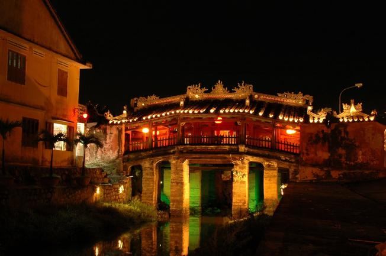

Chùa cầu nét kiến trúc đậm chất phố cổ Hội An
Có ai đó đã từng ví, Chùa Cầu là điểm sáng của du lịch Hội An, là tình yêu của kẻ ở, người đi đầy lưu luyến thì quả thực không sai. Chùa Cầu Hội An nằm vắt mình qua một nhánh nhỏ của dòng Thu Bồn quanh năm ôm ấp thành phố, xung quanh được bao bọc bởi khu phố cổ nghìn năm lịch sử, phảng phất đâu đó nơi góc phố hàng cây chút buồn miên man nhưng vẫn chan chứa niềm tin và hi vọng về tương lai tươi sáng rực rỡ của người dân nơi đây, những con người không ngừng ước mơ và lạc quan về cuộc sống.
Dấu ấn kiến trúc của đất nước mặt trời mọc
Chùa Cầu hiện toạ lạc trên đoạn tiếp giáp giữa đường Nguyễn Thị Minh Khai và đường Trần Phú, thuộc phố cổ Hội An, Quảng Năm. Tổng chiều dài cây cầu dài khoảng 18 mét có mái che mưa, che nắng bắc ngang qua một nhánh nhỏ của dòng sông Thu Bồn êm đềm. Tương truyền, vào năm 1719, chúa Nguyễn Phúc Lai đã đến thăm chùa và ban tặng cho chùa ba chữ “Lai Vãn Kiều”, có nghĩa là “Bạn từ phương xa đến”, như một sự trầm trồ, ngợi khen, đồng thời thể hiện tấm lòng yêu mến khung cảnh nơi đây và cũng như một cách ghi dấu bước chân Chúa đã từng ghé qua miền đất này.

Chùa Cầu Hội An mang nét ấn tượng độc đáo
Khéo léo được đặt trên một cây cầu, dưới là dòng nước mát trong, trên là nóc nhà bình yên che chở, Chùa Cầu là đại diện tiêu biểu cho lối kiến trúc truyền thống của các nước phương Đông. Chùa Cầu là một trong những địa điểm du lịch Hội An đầy ý nghĩa, sẽ là điểm dừng chân hoàn hảo cho chuyến đi của bạn bởi nét kiến trúc độc đáo của những cây cột bằng gỗ, được sơn son, chạm trổ kỳ công, tỉ mỉ. Người ta thường nói, Chùa Cầu Hội An mang nhiều nét kiến trúc đặc trưng trong văn hóa Nhật Bản bởi chính những bức tượng thú đứng chầu, đó là những linh vật trong việc thờ tự. Theo quan niệm tín ngưỡng của người Nhật, đó là tượng khỉ và tượng chó oai nghiêm. Bên cạnh đó, còn có một giai thoại khác kể lại rằng , chùa được khởi công xây dựng vào năm Thân, nhưng đến năm Tuất mới hoàn thành nên người ta đã dựng nên những bức tượng ấy để ghi nhớ. Dù cho mang ý nghĩa gì đi nữa, những linh vật ấy vẫn ngày đêm bảo vệ cho ngôi chùa, vẫn trầm mặc hòa cùng nhịp sống bình lặng của một mảnh ghép cổ điển tại điểm du lịch Hội An. Nhìn từ xa, Chùa Cầu nổi bật với đường cong của mái che mềm mại, uyển chuyển, tựa như cầu vồng, làm bừng sáng một góc phố cổ, cổ kính mà lại hiện đại, trầm mặc mà lại rất nhộn nhịp, đa màu sắc từ văn hóa cho tới kiến trúc và tôn giáo.
Vẻ đẹp hài hòa của Chùa Cầu giữa lòng phố Hội
Chùa…nhưng không thờ Phật
Chùa Cầu Hội An được gọi là chùa nhưng không thờ Phật mà thờ Bắc Đế Trấn Võ – một vị thần bảo hộ xứ sở, đem niềm vui, hạnh phúc đến cho con người trên mảnh đất này. Bởi vậy, hàng năm, không chỉ người dân mà du khách cũng đến đây, không chỉ là địa điểm tham quan, khám phá mà còn để tìm chút thanh thản, bình yên cho những tâm hồn đã quá xáo động.
Chùa dưới ánh nắng
Chùa Cầu còn được gọi với tên khác là Cầu Nhật Bản bởi chiếc cầu và ngôi chùa được các thương nhân người Nhật xây dựng vào những năm đầu thế kỷ 17 với biểu tượng mái hình chiếc kiếm đâm xuống lưng con quái vật mamazu – quái vật gây ra động đất, thiên tai, với mong muốn đem lại sự bình yên cho mảnh đất thương cảng, nơi hội tụ giao thương Có thể khẳng định, chùa Cầu Hội An chính là biểu tượng giao lưu văn hoá, kiến trúc giữa 3 nước Việt Nam, Nhật Bản và Trung Hoa.
Khung cảnh Chùa Cầu đẹp rực rỡ dưới ánh đèn đêm
Thời gian vẫn cứ trôi, bao cuộc đời đã đến và đi qua nơi phố cổ Hội An đầy thăng trầm, nhưng Chùa Cầu vẫn uy nghiêm đứng đó, chứng kiến tất cả. Những lớp bụi thời gian không ngừng phủ lên, tưởng chừng có lúc công trình này sẽ đi vào lãng quên, nhưng không Chùa Cầu vẫn sẽ mãi đẹp như là trái tim ấm nóng của Hội An trong tim người dân và bao du khách. Khi đến Hội An bạn đừng quên một lần ghé qua nơi đây để cảm nhận và hoài niệm về chút gì đó cổ xưa, tĩnh tại giữa dòng đời hối hả, con người có thể lãng quên nhau còn quá khứ thì vẫn còn đó nhắc nhở chúng ta phải trân trọng quá khứ cũng như sống trọn vẹn với hiện tại.